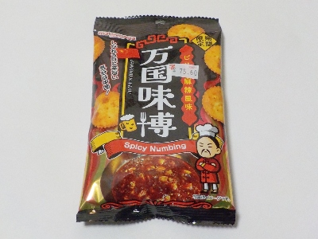
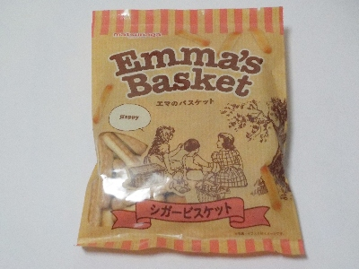
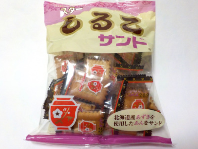
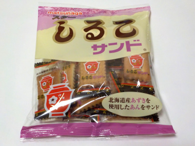

松永製菓の万国味博 ピリ辛麻辣風味
2024/11/30

麻辣（マーラー）味だそうです。私は辛い物をあまり食べないので、マーラーと言われてもよくわからないです。
クラッカーはピリ辛で刺激がありますが、そんなに辛くはないので美味しくいただけました。
マーラー味が強いので、クラッカー味が少なめでした。
愛知県小牧市大字西之島330番地
2024/11/30

麻辣（マーラー）味だそうです。私は辛い物をあまり食べないので、マーラーと言われてもよくわからないです。
クラッカーはピリ辛で刺激がありますが、そんなに辛くはないので美味しくいただけました。
マーラー味が強いので、クラッカー味が少なめでした。
2024/04/04

塩味が効いてる細長いビスケットです。
サクサクっとしていて、とっても軽いです。カッパえびせんみたいに、次々取って食べちゃう商品だと思いました。
2023/08/18

以前に買ったスターしるこサンドより、量が多いパッケージの商品を買いました。
110g入りです。長持ちして経済的です。
ちょっとづつ食べようと思ってます。
2023/03/31

安くて量があって個包装なので、職場での気分転換のおやつ用に買いました。
ちょっぴりあんこ風味があるコンガリ焼けたビスケットです。
小さめなので食べやすいです。せんべいとかチョコレートは匂いが強いので、回りの人が気にするんじゃないかと思うと少し食べにくいですが、これはあまり匂いがしないのでいいですね。
美味しいので今後も買って食べようと思います。